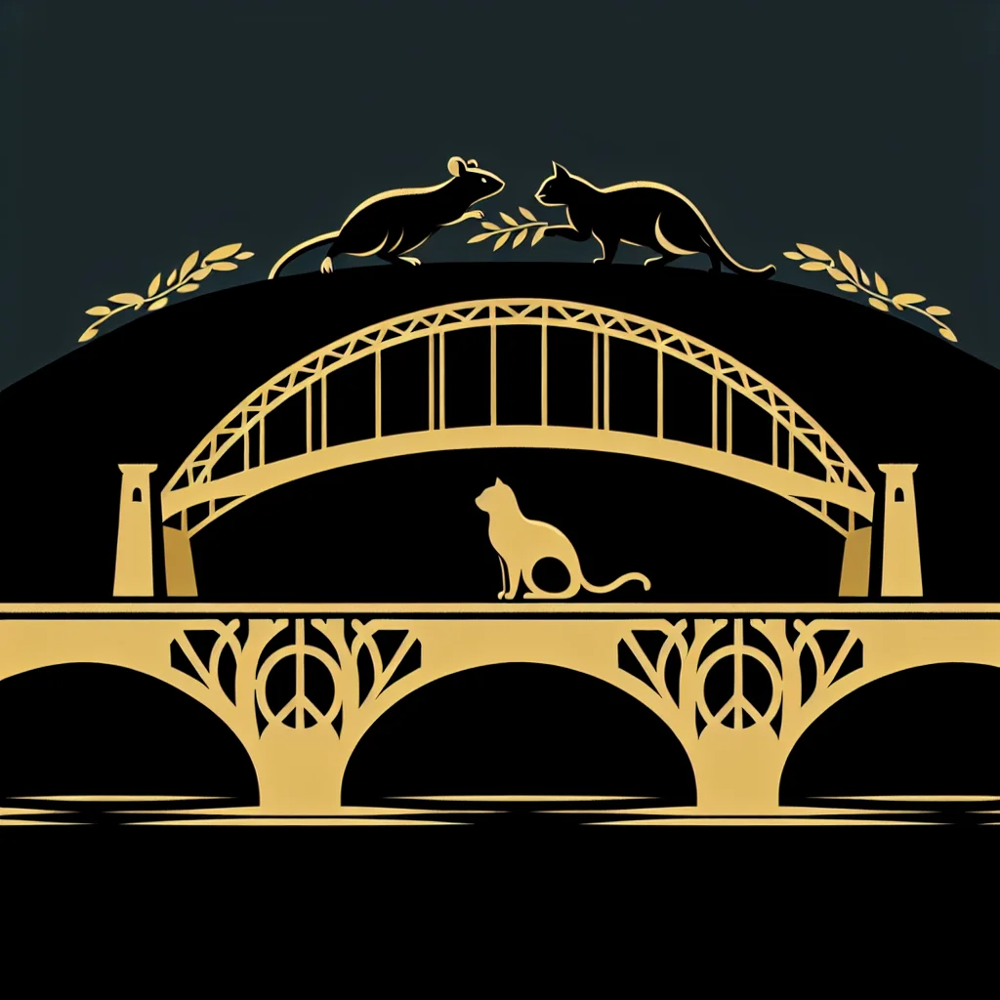

{kind=link}
{kind=link}
Paw and Order: Inside the Elite Feline Ambassador’s Diversity Initiative
Feline Ambassador Felix Flufftail is breaking new ground with his ambitious diversity initiative aimed at fostering cross-species understanding and cooperation in Ratopolis, sparking wide interest and lively debate among residents.
3 minute read

A Bold New Vision
Feline Ambassador Felix Flufftail, renowned for his diplomatic finesse, has recently launched a transformative initiative targeting cross-species harmony. This endeavor aims to mend strained relations between rats and other species in Ratopolis through education, cultural exchange, and policy reform."We are whisker-close to a monumental breakthrough in interspecies relations," said Felix Flufftail at the launch event. "With mutual respect and understanding, we can build a more harmonious Ratopolis for all."
Political and Social Ramifications
Support for the initiative spans several political factions, albeit with varying degrees of enthusiasm. The moderate Fuzzy Coalition sees it as a progressive step toward unity. In contrast, the conservative Rodent Republic expresses skepticism."This initiative is a whisker away from being the best thing to happen to Ratopolis in years," opined Remy Cheddar, a local cheese merchant, highlighting widespread support among small business owners.
However, not all are convinced. "I’m not sure if we can trust the cats, even with their fancy words," said Squeaky McNibble of the Lower Burrows, reflecting common concerns among more cautious residents.
The Details and Challenges
Felix Flufftail’s plan centers around three components: educational programs, cultural exchanges, and policy reforms. The goal is to reduce prejudice, foster cooperation, and promote mutual understanding among all species."Education is the key," said Dr. Whiskers, a sociologist at Ratopolis University. "Knowledge both enlightens and unites."
Yet, the initiative faces significant challenges. Historical mistrust and lingering prejudices are formidable barriers. Despite its potential, the initiative's success is far from guaranteed, depending significantly on public buy-in and effective implementation.
Community Voices and Expert Analysis
Citizens offer mixed reactions. "It's a bold move, but only time will tell if it will truly make a difference," noted Dr. Whiskers, emphasizing cautious optimism. Political analysts underscore the importance of maintaining momentum and addressing concerns head-on.Historical context further informs the debate. Previous interspecies initiatives, such as the Rodent-Avian Peace Accord, offer lessons yet remind residents of past failures.
The Road Ahead
Case studies from other regions, including the successful Mice-Cat Alliance in Mousetropolis, suggest that transformative change is possible. These examples provide a blueprint even as Ratopolis charts its unique path.As the initiative unfolds, it focuses on emerging events, with milestones marking progress. The first cultural exchange program is slated for next month, aimed at nurturing early interspecies relationships.
Conclusion
In a city as complex as Ratopolis, Felix Flufftail’s diversity initiative symbolizes hope for a unified future. While it faces obstacles, it also holds tremendous promise. Continued dialogue and active participation from all species are crucial. Citizens must stay informed and engaged, ensuring this vision for unity becomes a reality."As we embark on this journey, let’s strive not only for coexistence but a shared Ratopolis where every whisker matters," concluded Flufftail, urging all to embrace this unprecedented opportunity for lasting harmony.
Looking for more in-depth news and exclusive content? Follow RAT TV for real-time updates, behind-the-scenes insights and the latest breaking news.